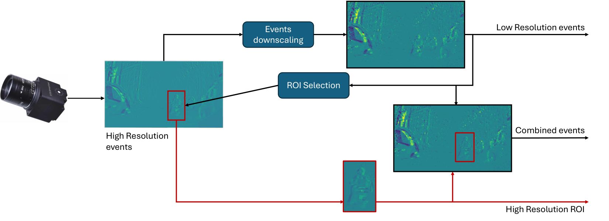

Fig. 1: Overview of the LACE codec. At each quantization layer, the residual embeddings are independently compressed before being passed to the quantization layer. Frames with the ...
Figure 2. Continuous-time imputation under increasing missing rates. RMSE on six OOD wearable datasets at 25%, 50%, and 75% missing rates under the identical causal-prefix protocol...
事件相机具有高时间分辨率，但高速流量会占用带宽、内存和能耗。先全部编码再删除 token 无法节省前端成本。该文尝试低分辨率事件流上的早期注意力，通过多尺度 ROI 保留局部动态证据，面向受限边缘计算。
从本日报的选取理由看，最新批次新增，非当日投稿。直接在降采样事件输入上执行多尺度自底向上显著性选择，压缩发生在昂贵编码之前；对边缘部署有价值，但缺少语义查询条件，不能当作完整属性保真方案。
核心问题
在大幅降低输入分辨率的情况下，能否仍稳定定位多类别 ROI，并维持毫秒时间粒度？尤其需区分输入缩减、检出准确率与真正计算加速。
对当前主题的关键意义在于：在现有 Event 数据上比较全流编码、均匀降采样和 ROI 前端，保留相同总事件数；报告弱光/噪声分层属性 F1、关键区域覆盖与前端加后端总延迟。
方法与关键创新

Figure 1 : Proposed pipeline for multi-resolution ROI detection. Visual events are downscaled, and low-resolution events are used to select relevant ROI . Our proposed pipeline pro...
Figure 1: ResLRP mitigates attribution noise from residual cancellations. a) Cleaner heatmaps and more precise localization than other methods, smoothing further when combined with...
Fig. 1: Overview of TIO-Former . (a) Real-world flight. (b) Six-direction ToF sensing with six 8 × 8 8\times 8 arrays and a 15 g ToF payload. (c) Open-loop 3D trajectory comparison...
Figure 1: Overall comparison across ten metrics on various datasets. With the same backbone model, our method demonstrates superior and consistent performance across all tasks.
Fig. 2: Architecture of EventEgoHands++. The pipeline consists of two primary stages: (1) Hand Extraction Stage, where a hand detector identifies and extracts hand regions from eve...
Figure 1: Overview of AsyncCouple-Flow . (1) MATS tokenizes each modality at its native rate via a CNN/patch embedder and retains the top- k k tokens using a shared scorer Σ \Sigma...
Figure 1 : Deep Audio-Visual Coupling in Video-HolmesV2. Using Zootopia , we demonstrate the necessity of cross-modal synthesis. Visual cues alone (identifying a blue snake) fail t...
构建深度音视觉耦合 benchmark，用多模型交叉核验提升题目严谨性；提出时空证据感知指标；音频—文本引导压缩融合任务意图与声音锚点，提取高价值推理线索。摘要不足以确认压缩位置、预算规则和硬件效率。
阅读时需要把方法设计与主要结果一起看：摘要称强闭源模型准确率仍低于 60%，所提方法超过可比开源 omni 模型。未列具体模型、保留率和延迟，需精读表格；原始页未给出代码链接。
实验结果
摘要称强闭源模型准确率仍低于 60%，所提方法超过可比开源 omni 模型。未列具体模型、保留率和延迟，需精读表格；原始页未给出代码链接。
![Figure 1: Overview of AsyncCouple-Flow . (1) MATS tokenizes each modality at its native rate via a CNN/patch embedder and retains the top- k k tokens using a shared scorer Σ \Sigma . (2) ACCG constructs a learnable graph of nodes ( m , t , i ) (m,t,i) with edges encoding time offset δ t \delta t , semantic similarity, and physical priors ϕ phys \phi_{\text{phys}} ; missing modalities are masked nodes. (3) The Flow-Matching head conditions a single-pass ODE on the ACCG context to generate the H H -step forecast.](../assets/figures/cfa8d20350c3e9ba.png)